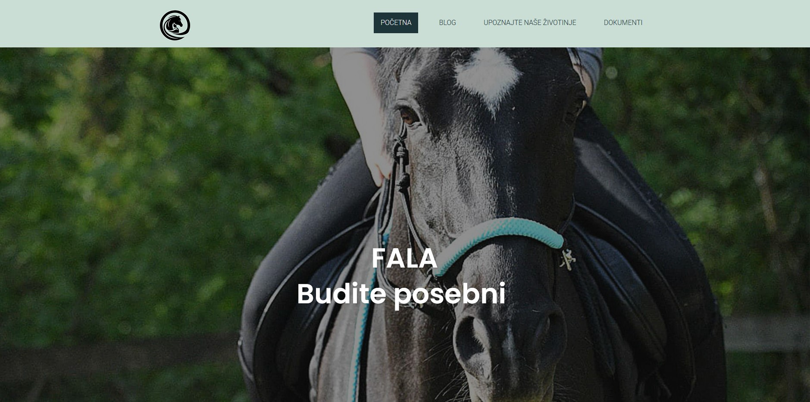
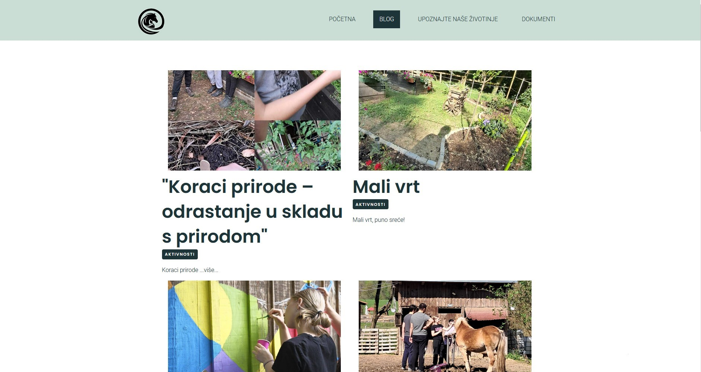

Fala.hr Mydataknox site builder • CSS Open site A non profit organization i volunteered to refine the website for. All images were provided by the client. The website was created using MyDataKnox' built-in site builder with an added css script within the website.  